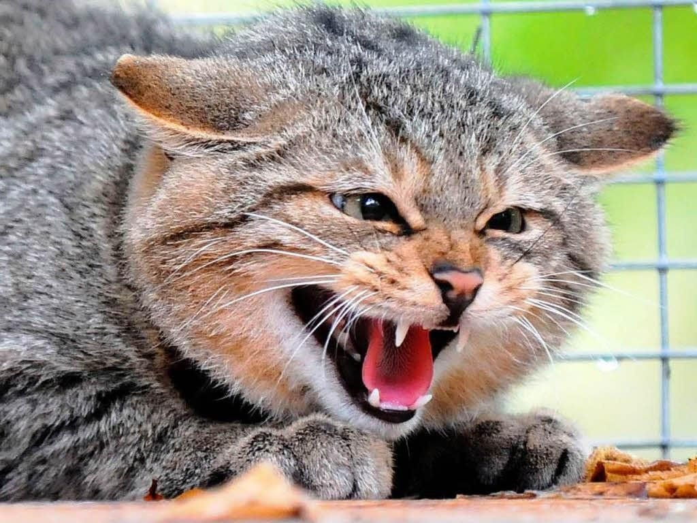

На северо-западе Москвы домашняя кошка совершила нападение на семью своих хозяев. В результате пострадали один ребенок 13-ти лет и трое взрослых. Стало известно, что трое пострадавших госпитализированы. Угрозы для их жизни нет, но есть вероятность, что укусы и царапины могут привести к бактериальной инфекции, которая с трудом лечится. Возможные последствия нападения могут быть довольно тяжелыми.
Каковы были причины для нападения на хозяев пока что не известно. Не дожидаясь выяснения причин, животное уже усыпили. По словам главного российского специалиста по кошкам Юрия Куклачева, причин для нападения может быть много. Но важно отметить, что такие случаи крайне редки и всегда чем-то обоснованы. Вероятно кот принадлежал к особой породе, например, к сиамам, которые могут быть достаточно агрессивны (хотя и среди них нападения на хозяев ограничиваются не более чем легкими царапинами). Если это был камышовый кот – вероятность нападения еще выше. Как говорит Юрий, обычные уличные тигровые кошки или персы никогда не нападут. Кроме того заслуженный кошатник отметил, что кошки если и нападают, то только от обиды. Например, если кота потыкать носом в его какашки, то если это настоящий альфа-кот, он обязательно отомстит. Бывает и такое, что коты признают только одного владельца, а к другим относятся настороженно, хотя и в этом случае дальше простых ударов лапой дело не идет.
Изредка случается и такое, что люди своим страхом показывают коту, что это именно он в доме хозяин и тем самым провоцируют его на дальнейшие нападения. И не стоит забывать, что хищник всегда остается хищником, поэтому нужно уважать кошку, но не бояться ее. И всегда помнить, что это рациональное животное, и оно не станет совершать атаки без серьезной причины. Скорее всего, нападение московского кота обусловлено либо генетическими факторами, либо плохим обращением со стороны хозяев.
По словам Юрия Куклачева, за 45 лет работы с кошками на него ни разу никто не напал. Примерно такого же мнения придерживаются и специалисты по поведению животных, утверждая, что в абсолютном большинстве случаев в агрессивном поведении животных виновны люди. Но не стоит сбрасывать со счетов и бешенство.